DNT-118
面向 SCP:SL 服务器生态的开发组织，由我（DNT_OF）维护。 现在主要做 EXILED / LabAPI 插件和服务器数据接口这一类东西。
在做的方向
组织里的项目，大多是服务器运营中反复出现的需求沉淀下来的工具： 数据接口、查询机器人、远程管理这一类。
接下来的计划
把已知、归组织所有的项目逐个开出公开分支，作为面向社区的版本： 功能内核不变，其它都放开。具体拆开是三件事——
- 给现有项目建公开分支，作为社区版的主要发布渠道；
- 补全文档和安装说明，让人拿去就能用；
- 开放 Issue，收使用反馈和需求。
第一个社区版 SCPSL_WebUI_Community 计划在 2027 年 1 月 1 日 11:18 发布。
计算中…
距离发布 · SCPSL_WebUI_Community